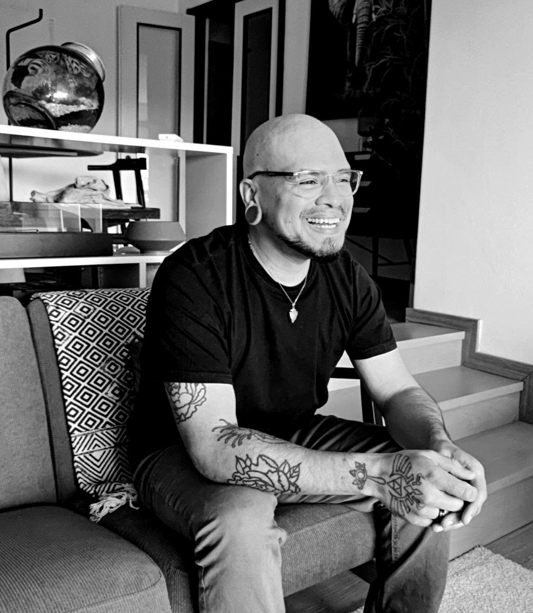

Alejandro Morales
Gonzalez
Photographer · Porto, Portugal
est. 2015

Ali Capa is a fine art photographer whose work explores travel, memory, intimacy, and the human experience. Through portraiture, landscapes, and documentary influenced photography, his images seek the quiet moments that shape how we remember places, people, and ourselves.
Born in 1989, Alejandro Morales Gonzalez is a photographer from Maracaibo, Venezuela. He grew up between Salt Lake City and Calgary, where an early fascination with art, drawing, and music led him into the growing underground music scene in Utah. After completing his studies in the United States, he graduated from Universidad Católica Cecilio Acosta with a Bachelor's degree in Communications and an Associate of Arts degree.
He has worked across various film productions and photographic studios, where he developed a distinctive visual language defined by highly saturated, painterly, dreamlike, yet deeply intimate imagery. Alongside his commercial and cinematic work, he continued developing personal projects focused on staged photographic narratives, portraiture, landscapes, and female nude photography.
He currently resides in Porto.
I have always believed that photographs can do more than document a moment.
They can remind us of someone we miss, encourage us to travel somewhere unknown, or reveal emotions we didn't know we were carrying.
My work moves between landscapes and the human body because I see both as expressions of the same thing. Desire. Memory. Freedom. Longing. Home.
Whether I am photographing a mountain road in Portugal or a quiet portrait in Venezuela, I am searching for photographs that continue living long after the shutter closes.
If someone leaves my work wanting to write a poem, call an old friend, take a journey, or simply pay closer attention to the world around them, then the photograph has done its job.
Photography has taken me across ten countries and introduced me to extraordinary people, but I'm still chasing the same thing I was looking for when I first picked up a camera.
A feeling worth remembering.
Come with me.
I'll show you something beautiful.